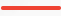
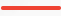

Етнічне походження
Отримайте
розгалужений розподіл
вашого походження —
2 114 регіонів
розгалужений розподіл
вашого походження —
2 114 регіонів
Дізнайтесь про своє
етнічне походження
етнічне походження
Результати тесту вашої ДНК від MyHeritage включають
визначення етнічного походження: процентний розподіл
вашого походження, що показує походження ваших
предків серед 42 етнічних груп, включаючи японську,
ірландську, італійську, єврейську та багатьох інших. Ви
знайдете список регіонів, з яких походять ваші предки
— з обох сторін вашої родини, — а також відсотковий
склад вашої ДНК, що бере початок із кожного регіону. 
визначення етнічного походження: процентний розподіл
вашого походження, що показує походження ваших
предків серед 42 етнічних груп, включаючи японську,
ірландську, італійську, єврейську та багатьох інших. Ви
знайдете список регіонів, з яких походять ваші предки
— з обох сторін вашої родини, — а також відсотковий
склад вашої ДНК, що бере початок із кожного регіону. 
Отримайте детальне
розуміння свого
походження
розуміння свого
походження
Генетичні групи дозволяють вдосконалити вашу етнічну
приналежність, визначаючи окремі групи, які ви
успадкували з відповідного географічного регіону.
Завдяки генетичним групам ви дізнаєтесь про місця, з
яких походять ваші предки серед 2 114 груп, надаючи
краще розуміння вашого родинного походження.
Отримайте розгалужений розподіл вашого походження —
2 114 регіонів
приналежність, визначаючи окремі групи, які ви
успадкували з відповідного географічного регіону.
Завдяки генетичним групам ви дізнаєтесь про місця, з
яких походять ваші предки серед 2 114 груп, надаючи
краще розуміння вашого родинного походження.
Визначає
найрізноманітніші
групи регіонів
найрізноманітніші
групи регіонів
Північна та Західна
Європа
Європа
Проект засновників роду
Компанія MyHeritage визначила унікальних засновників родів,
людей які жили в одному місці протягом багатьох поколінь.
Ми скерували тести ДНК до цих людей з усього світу від
Узбекистану до Фіджі, а також від Гренландії до Південної
Африки, які були обрані на основі їхнього походження
генетичними представниками в їх географічному регіоні. Цей
проект — найбільший у своєму роді з усіх, які коли-небудь
проводилися — дозволяє MyHeritage виділяти набагато
більше етнічних груп, ніж будь-яка інша велика служба
тестування ДНК
Дізнайтеся більше
людей які жили в одному місці протягом багатьох поколінь.
Ми скерували тести ДНК до цих людей з усього світу від
Узбекистану до Фіджі, а також від Гренландії до Південної
Африки, які були обрані на основі їхнього походження
генетичними представниками в їх географічному регіоні. Цей
проект — найбільший у своєму роді з усіх, які коли-небудь
проводилися — дозволяє MyHeritage виділяти набагато
більше етнічних груп, ніж будь-яка інша велика служба
тестування ДНК
Дізнайтеся більше
2 114 регіонів